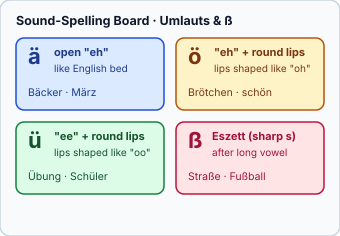

Umlaute und Diphthonge
Mit einem KI-Tutor lernen
Ein KI-Tutor erklärt dir diese Seite und hilft dir bei den Aufgaben. Wähl deinen Assistenten:
Mit Claude öffnen Mit ChatGPT öffnen Mit Mistral Vibe öffnen
Du nutzt dein eigenes Konto beim Anbieter. Der Assistent ist kein Angebot von lernapps.net: lernapps liefert nur Inhalte und Aufgaben. Die Wahl gilt für alle Seiten, nur auf diesem Gerät.
Brötchen beim Bäcker in Lindenberg
Morgens vor der Schule holt Peter mit Lukas frische Brötchen beim Bäcker. Zwei kleine Punkte verändern hier Bedeutung und Klang: Brot wird zu Brötchen, schon (already) zu schön (nice). Herr Braun ergänzt den Lippen-Trick auf der Laut-Schrift-Tafel.
Aufgabe
Lösung
Zunge wie bei *i* (*ee*), Lippen fest gerundet wie bei *u* (*oo*) richtige Antwort
Richtig! Die Zunge bleibt vorn beim *i*, während die Lippen ein enges *u* formen.
Genauso wie das normale *u* in *Schule*
Dann klingt *fünf* wie *funf* – *u* liegt hinten im Mund, *ü* liegt vorn.
Wie ein kurzes *a* mit offenen Lippen
Für **ü** müssen die Lippen klar gerundet sein.
Alle Umlaute entstehen vorn im Mund: **ö** kombiniert *e* + runde Lippen, **ü** kombiniert *i* + runde Lippen.

© CC0-1.0Peters Laut-Schrift-Tafel: So formst du die Umlaute ä, ö, ü – und erkennst das ß.
Diphthonge: Zwei Vokale verschmelzen zu einem Klang
Bei einem Diphthong (Doppellaut) gleitet die Stimme in einer Silbe von einem Vokal zum nächsten. Achte besonders auf ei (ai) gegen ie (langes i): Wein (wine) und Wien (Vienna) klingen völlig verschieden!
| Schreibung | Klang | Beispiele |
|---|---|---|
| ei (auch ai) | wie Englisch eye | eins, zwei, Mai |
| ie (kein Diphthong) | langes i (wie see) | vier, spielen, Wien |
| eu / äu | wie Englisch oy in boy | neu, Deutsch, Häuser |
| au | wie Englisch ow in house | Haus, Braun, auch |
Merkregel für ei und ie
Der zweite Buchstabe verrät den Klang auf Englisch: ei → englisches I (eye), ie → englisches E (ee).
Übung: Umlaute und Diphthonge erkennen
Aufgabe
Lösung
Richtige Antwort: Die Aussage stimmt.
Richtig! Beide klingen wie *oy* (*neu, Deutsch, Häuser*). Man schreibt **äu**, wenn das Wort von einem Wort mit *au* kommt (*Haus → Häuser*).
Aufgabe
Lösung
Richtige Antwort: Mai – wie Englisch eye (ai / ei); Wien – langes i wie in see (ie); Freund – wie Englisch oy in boy (eu / äu); Braun – wie Englisch ow in house (au)
Mit diesen vier Klanggruppen (*ei/ai, ie, eu/äu, au*) liest du deutsche Vokalkombinationen auf einen Blick sicher vor.
Aufgabe
Wähle den passenden Laut (ei, ie, eu, äu oder au) für Peters Notizen aus Klasse 6.
- four (long ee sound) → v…r
- two (eye sound) → zw…
- German (oy sound) → D…tsch
- houses (plural of Haus, oy sound) → H…ser
Lösung
- vier
- zwei
- Deutsch
- Häuser
ie klingt wie langes i (vier), ei wie ai (zwei), eu/äu wie oi (Deutsch, Häuser – mit äu, weil es von Haus kommt).
Fehler gefunden oder eine Idee für diese App?